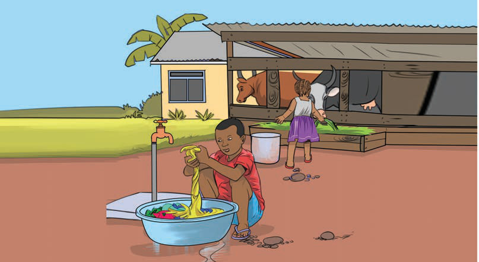
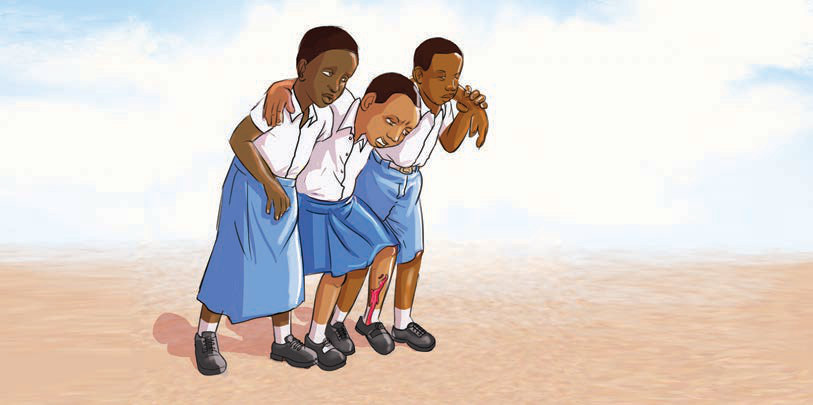

Kielelezo namba 7: Watoto wakifanya kazi mbalimbali nyumbani
Matendo ya maadili katika kusaidiana
Jamii zetu zinasisitiza matendo ya kuwasaidia watu wengine na kusaidiana. Kuwasaidia watu wenye mahitaji maalumu ni sehemu ya maadili ya jamii za Kitanzania. Kila mmoja anao wajibu wa kuwasaidia watu wanaohitaji msaada kama ilivyo katika Kielelezo namba 8. Kuwasaidia watu wengine kunasaidia watu kupendana, kusaidiana na kushikamana.

Kielelezo namba 8: Wanafunzi wakimsaidia mwanafunzi mwenzao